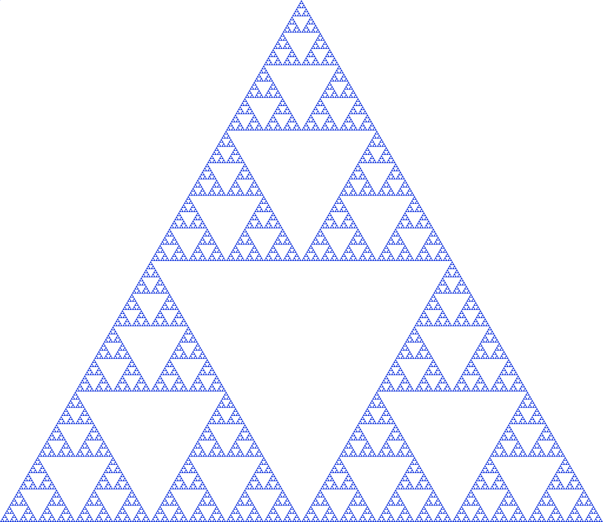

According to :Merriam Webster, a fractal is "any of various extremely irregular curves or shapes for which any suitably chosen part is similar in shape to a given larger or smaller part when magnified or reduced to the same size". More simply, a fractal contains a smaller version of itself, which contains a smaller version of itself, ad infinitum. One such fractal is the :Sierpinski triangle, seen below;

If you zoomed in to one section of the Sierpinski triangle, you would find the same image!